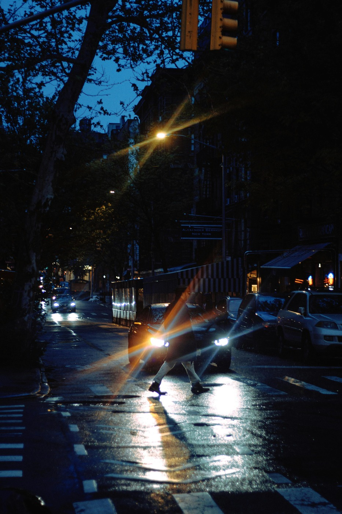

s = 0.50
Project Page
ControlLight: Towards Controllable, Consistent, and Generalizable Low-Light Enhancement
1 Shenzhen Institutes of Advanced Technology, Chinese Academy of Sciences · 2 Zhejiang University
ControlLight studies low-light enhancement from three complementary perspectives: controllable strength adjustment, consistent structural restoration, and strong generalization across real indoor, street, weather, and portrait scenes.

Data Construction
Light100K data construction and controllable supervision design
We build the training data pipeline to support consistent low-light restoration under controllable enhancement strength, enabling the model to learn both visual recovery and explicit intensity modulation.

Model Pipeline
ControlLight model pipeline
The model pipeline emphasizes controllable enhancement trajectories, stable restoration behavior, and robust performance across a wide range of low-light image domains.

Interactive Gallery
20 low-light examples
Each card uses the same lightweight strength slider to visualize a continuous enhancement trend on top of a real low-light sample.
Citation
BibTeX
@misc{controllight,
title={ControlLight: Towards Controllable, Consistent, and Generalizable Low-Light Enhancement},
author={Yufeng Yang and Jianzhuang Liu and Jisheng Chu and Yuqi Peng and Xianfang Zeng and Jiancheng Huang and Shifeng Chen},
howpublished={Project Page},
url={https://yfyang007.github.io/ControlLight/}
}